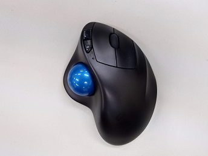
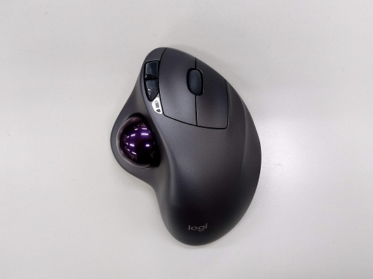

15年使ってきた普通のマウスからトラックボールマウスに移行したお
更新：2020/01/09

生まれてきてから約20年、普通のマウスしか使ってこなかった人が
トラックボールマウスを使い始めるお話です。
トラックボールマウスを使い始めるお話です。
とある某Amazonサイバーマンデーで、LogicoolのSW-M570が安かったので買ってみました。
これ↓
このLogicool SW-M570はデフォルトだと、トラックボールが青色でなんか味気ないなと思ったので(?)
同じくAmazonに売っていた、交換用のトラックボール"ぺリックス PERIPRO-303 GP 34 mm交換用トラックボール 光沢仕上げ パープル"を
追加で購入して、こうなりました。↓
Amazonに載っている写真よりは若干黒目な感じもしますし、
この写真の光の加減等もありますけど、色に関してはカラコードでいうと#6B0764くらいですかね(?)
見た目に関してはトラックボールの色を変えたのもあり、めちゃくちゃカッコいいです。 使用感については、また別途記載するのでぜひ↓
使用感についての記事
これ↓

このLogicool SW-M570はデフォルトだと、トラックボールが青色でなんか味気ないなと思ったので(?)
同じくAmazonに売っていた、交換用のトラックボール"ぺリックス PERIPRO-303 GP 34 mm交換用トラックボール 光沢仕上げ パープル"を
追加で購入して、こうなりました。↓

Amazonに載っている写真よりは若干黒目な感じもしますし、
この写真の光の加減等もありますけど、色に関してはカラコードでいうと#6B0764くらいですかね(?)
見た目に関してはトラックボールの色を変えたのもあり、めちゃくちゃカッコいいです。 使用感については、また別途記載するのでぜひ↓
使用感についての記事
今回紹介した商品
Tweet